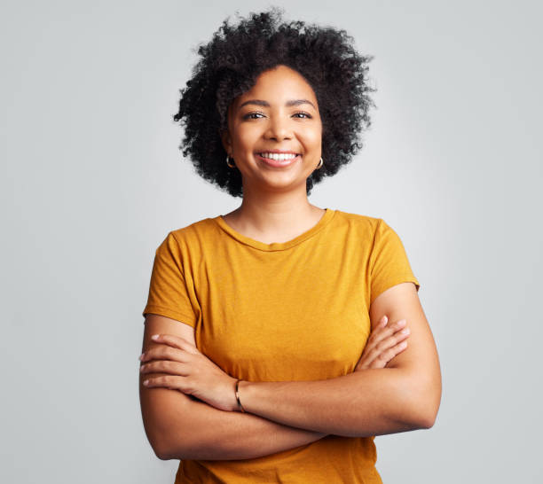

Jour 1

Ayman (10:00 - 11:30)
talk 1: Introduction à l'accessibilité web
- Objectif : Rendre les sites utilisables par tous.
- En détails : Utiliser le HTML sémantique et les attributs ARIA pour les lecteurs d'écran.

Yassmine (12:00 - 1:30)
talk 2: Maîtriser les mises en page : Flexbox et Grid
- Objectif : Créer des designs modernes et responsifs.
- En détails : Aligner facilement les éléments à l'écran avec les dernières normes CSS.

Farah (02:00 - 3:30)
talk 3: Manipulation du DOM et gestion des événements
- Objectif : Rendre les pages interactives avec JavaScript.
- En détails : Capturer les clics et modifier la page en direct sans la recharger